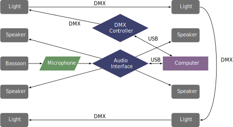

This piece was written in 2018 and was premiered by Dominic Panunto at the Live/Wire Opera Festival in Philadelphia. The piece is a five-movement programmatic work that draws inspiration from various parts of the Bible. This piece also uses lights that change colors based on the sound of the bassoon. The piece can be obtained by contacting the composer at his website.
This piece calls for a lighting setup in addition to the audio setup. For the audio setup, the bassoon's sound travels through a microphone to an audio interface. The interface needs to have four outputs, as there are four speakers surrounding the bassoonist. There are no MIDI controllers for this piece, but the performance could be easier if a pedal was mapped to advance the movement counters. The stage lights are controlled by the DMX 512 protocol, which is programmed into the Max/MSP patch. The DMX is controlled by a USB DMX controller that connects to all of the lights via DMX cables. The four lights are placed next to each of the speakers and point toward the bassoonist.
A possible setup is shown below. 
The patch is shown in the screenshots section. The performer must turn the audio on by pressing the button in the bottom right corner. The colored panels in the bottom left corner show which movement is triggered and if the patch is listening to the sound or not. When the box on the far left is red, it means that the audio is being processed. The left panel with the number in it refers to the movement number. The right panel refers to which cue within the movement is active. This only applies to the fourth movement. The numbers are advanced by pressing the left and right square bracket keys ([ ]). The left bracket controls the movement number and the right bracket controls the cues.
This piece is not very difficult from a technical standpoint, although it does ascend to a high E flat. Much of the piece is improvisatory within a collection of given notes, or long notes that blend into multiphonics. The electronics are not very difficult. Only the fourth movement has changes within the movement, and those are not very close together. The difficulty for the electronics part is the addition of a lighting system to the setup, although the piece could work without the lights. This piece is likely within reach of many undergraduate students.
This piece is somewhat experimental with the electronics setup, but not as much with the sound. Most of the sounds generated from the patch are reverberations of the harmonic series or colorful chords. There are some multiphonics in the bassoon part, but they are mostly overblown from low notes and have a rich sound. This piece would likely fit in most recital programs.
©2024 by Benjamin Bradshaw
Logo ©2024 by Hannah Bradshaw